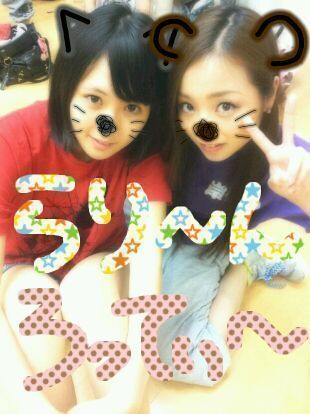

| 2012/09 18 Tue | 川村真洋 し(・3・)問 返し,すごく久しぶりで(◎ ε◎)w★ ろってぃー |
題名...
間違って
『しちゅもん返し』
ってうったら
あんな顔文字出てきちゃった(◎∀◎)笑
しちゅもんかえし
すごく ひさしぶりでちゅ。
ろってぃー♪で〜す。

は〜い。
大好きなせいらりんとぉw♪*^^*
皆様ぁ〜 )))
乃木坂ってどこぉ?
見て頂けたでしょーかー?・ω・
今回の運動会の件では
色々とつっこまれましたぁ〜 (´・ω・...
バツゲームの風船パーン!!!
なるやつでは
割れた瞬間
みな ふっとんだのに
まひろなんか一人
勝ち取ってたやん>ω<
とか
あと小さくガッツポーズしてたん?
リスライニングのこととかさあ、
(でもよ... まひろのマミー
リクライニング知らなくて
リスライニングって言葉が
あるんだ〜
って思ってたらしいよ !! ( ・ω
かっことじる。☆
乃木どこ?終わってから
知り合いとかに
言われて
ブログのコメントで
ファンの方にも言われて
そんなことしたっけなー?
って思って 後から
録画したの見て
きずく(・ω・))。
それに ,
バナナマン 日村さん設楽さんに
バトン見てねえぢゃん。と
つっこまれたけど
あれは 陸上部だった
みなみ♪が
バトンは見ないでってゆう
アドバイスをくれたからw >ε<笑
まひろも、小学生のころから
先生にそう教わった(・ω・)
でもさっでもさっ^∀^
やっぱ 皆と本気で
運動会できて良かった*^^* ))))
楽しかった !!!
...
でもやっぱ
悔しかったわ (T-T。)
走れ bicycle !
歌いたかったよぉ〜。
笑^ω^
はいっ!!
質問返しいきます(⌒‐⌒)
★マギのエンディング
まひろも歌ってんの？
☆そのへんどーなるか
まだわからないってばね！!(・∀・)
★ろってぃーは大阪に
帰らなかったのぉ?
☆帰りたかったけど
まひろお金持ちぢゃなくてよ・∀・
帰れなかったよ★!!
もう少し我慢しゅる...。
★真洋chan
今日もお仕事ですか?
☆今日はオフなんです(⌒‐⌒)
一昨日は朝 5時おきで
丸一日お仕事だった^^
もい回復したよ♪
★ダイエットしてる様ですけど
大丈夫ですか?
秋が旬の食べ物
ろってぃさんは何が好き!?
☆大丈夫です・∀・
思うどおりにへってくれなくて
悩んでます 笑
梨や柿が大好き〃ω〃
早く柿が食べたい♪
★何だか不思議な魅力
感じますね♪
いったい貴女は何者!?
☆ありがとうございます*^^*
あーしはちょっぴし
おかしな女です。
あw うそです^ω^
自分って何者なんだろう?...
★まひろの部屋に漫画家って
置いてあるんかな?
☆もともとは一冊もなくて
漫画もほとんど読まなかったんですけど 姉のすすめで
読むようになりました。
★今日は何して
頑張ろってぃー?
☆夜ご飯 食べるか食べないかで
迷って頑張ろってぃー・ω・´ 笑
以上っ)))
20日 乃木坂浪漫
よければチェックしてください・ω・`
テレビ東京 24:53 〜 24:58
ろってぃー♪でした(^-^)/のし